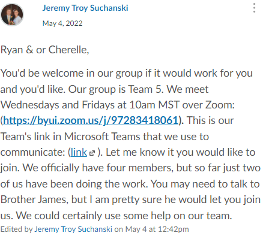

Example #1 Evidence

Example #2 Evidence
Example #3 Evidence
Helping|Learning From Others
3. becoming a person who enjoys helping and learning from others
(Student is an active participant in the team activities. Student watches for opportunities to help their peers, and feels satisfaction when they are able to successfully help someone.)
I have always enjoyed helping others and appreciate being able to learn from others. I look for oportunites where I might be able to help someone and try to do what I can to be of service. I also recognize that most people know something that I don't that they can teach me. I had the opportunity to both serve and learn from others during my time in this class.
Example #1
The first example of this for me of helping others was the first team activity when we first started. I set up all the tools and kept reaching out to my team members until everyone was set up and coming to the group meetings.
Example #2
The second example of me helping others is when I saw that Cherelle needed help and was looking for a team, so I reached out to her. She was thankful and joined our group. She has been a good addition to our group and she keeps telling McKay and I have been an answer to her prayers. It feels good to have been able to be of help to her.
Example #3
The third example of me both helping others and learning from others is that I have met with our team at least twice a week every week, sometimes more. We went through the code together and learned from each other.